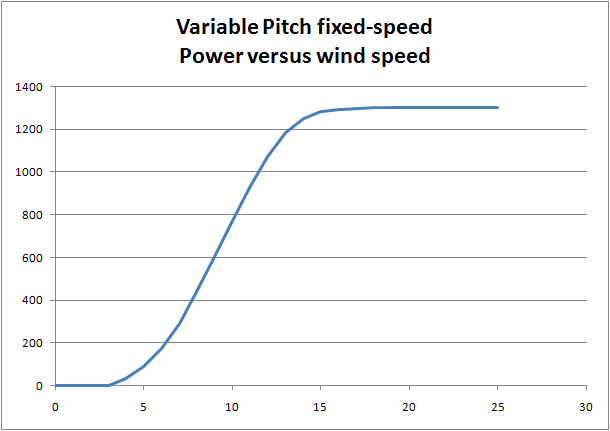
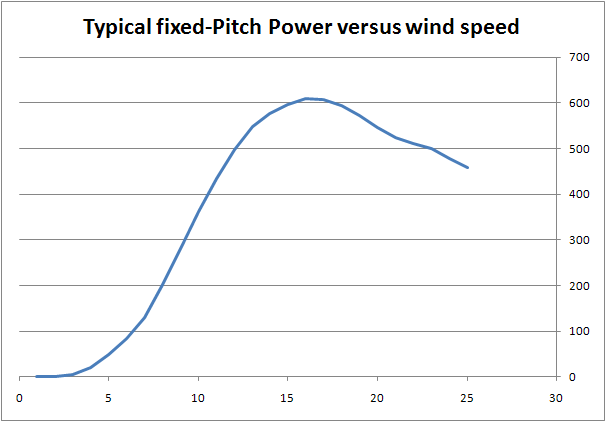

Using a variable pitch, even with squirrel cage generators directly connected to the Grid, the power extracted from the wind (and delivered to the Grid) can be controlled when the wind speed is above Nominal Wind.
Next figure shows the Power vs Wind Speed of the Wind Turbine used as model in this Dual Speed Active Stall Wind Turbine simulator, when connected in "Large" mode.

Earlier models of Wind Turbines that did not have variable Pitch, used the stalling characteristics of their Blades in order to stabilize the DriveTrain. As can be seen in the next figure, after a peak in the Power vs Wind speed, the power delivered by those Wind Turbines dropped as the wind speed increases.

You can see that the pitch value selected is such that there is a peek power after which the machine is in stall phase: more wind speed produces less power. After that peek value, more wing implies less available electric power and more stress on the machine.
A theoretical explanation can be found in reference 1, page 166
The basic idea is that if the attack angle gets higher than a certain value (typically between 10º and 16º) the boundary layer (the air layer in contact with the blade's surface) creates a wake (turbulences) that reduces the lift force (the force that pull the blade and produces the turning of the blade around its axis).
Therefore, there is clear advantage of using variable-pitch machines.